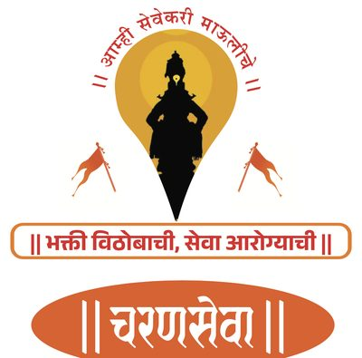

आरोग्य संपन्न वारी · मदत नकाशा
0
मदत केंद्रे ·
GPS सुरू नाही
नियंत्रण ▾
नकाशा नियंत्रण
📍 माझे स्थान दाखवा
🗺 सर्व points
शोधा · Search
मुक्काम निवडा
पालखी
दोन्ही पालख्या
श्री संत ज्ञानेश्वर महाराज
जगद्गुरू श्री संत तुकाराम महाराज
मदत प्रकार
सर्व
🚑 रुग्णवाहिका
🩺 डॉक्टर / दवाखाना
💧 पाणी
🚻 शौचालये
🤱 हिरकणी कक्ष
⛺ मुक्काम / विसावा
रुग्णवाहिका प्रकार:
सर्व
ALS प्रगत
BLS मूलभूत
१०२
१०८
दवाखाना प्रकार:
सर्व
प्रा.आ.केंद्र
ग्रामीण/उपजि. रुग्णालय
खाजगी रुग्णालय
HBT
⛑ ICU/ट्रॉमा
पाणी प्रकार:
सर्व
टँकर भरण ठिकाण
अंदाजे (दर ५०० मी)
थांबा प्रकार:
सर्व
मुक्काम
विसावा
🏛 प्रशासन संपर्क · Administration
🩺 आरोग्य अधिकारी · Health Officers
🚔 पोलीस संपर्क · Police (४४ स्टेशन)
🗺 सर्व
🚑 रुग्णवाहिका
🩺 डॉक्टर/दवाखाना
💧 पाणी
🚻 शौचालये
🤱 हिरकणी
⛺ मुक्काम
📍 माझे स्थान
●
जगद्गुरू श्री संत तुकाराम महाराज
●
श्री संत ज्ञानेश्वर महाराज · फिकट पिन = अंदाजे स्थान